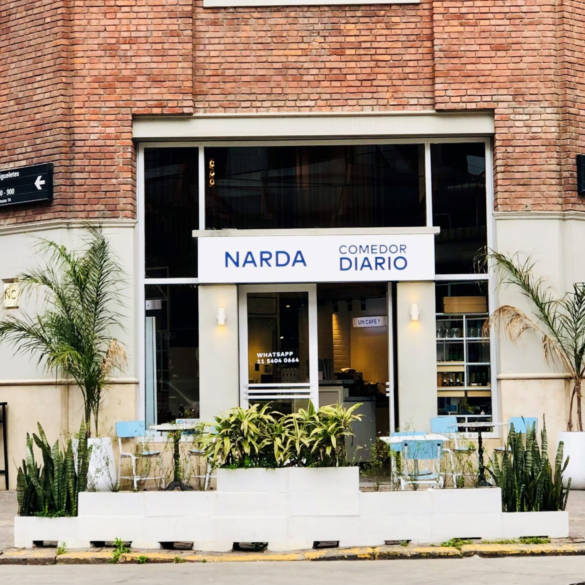
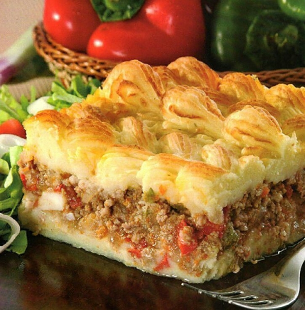
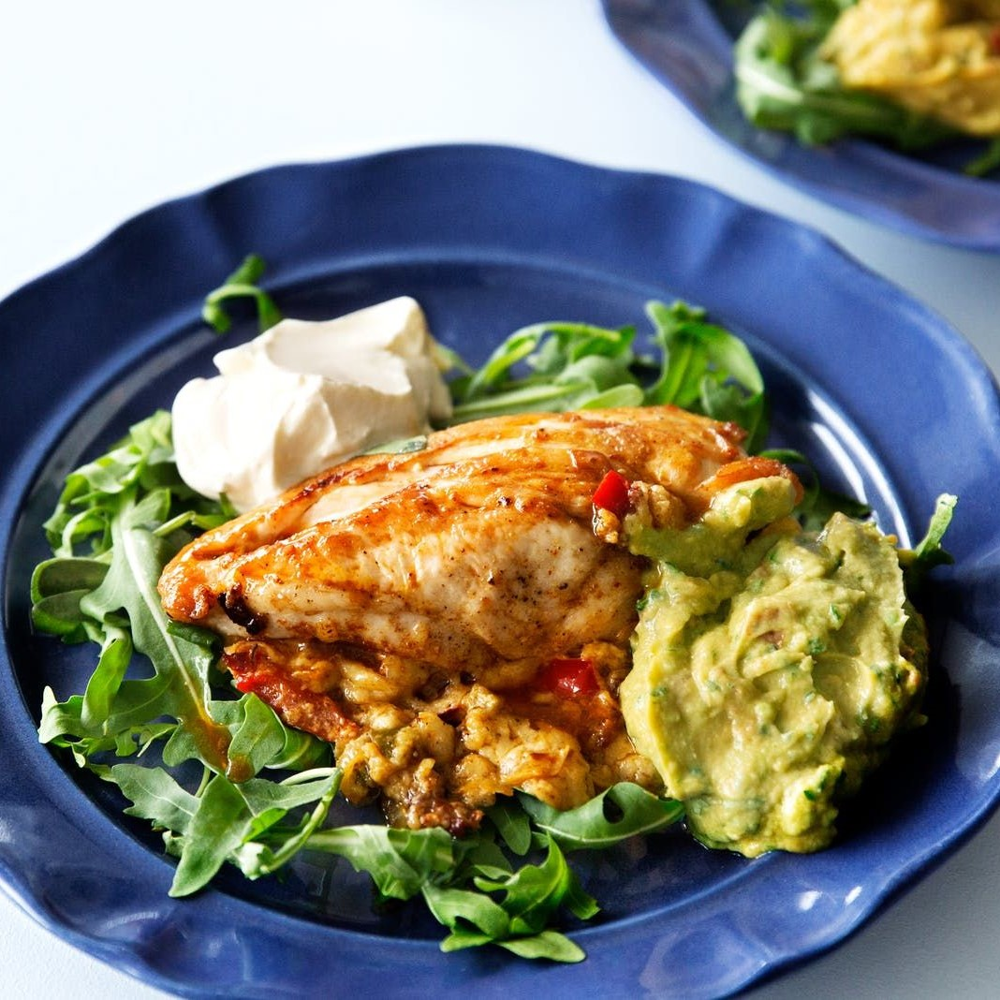
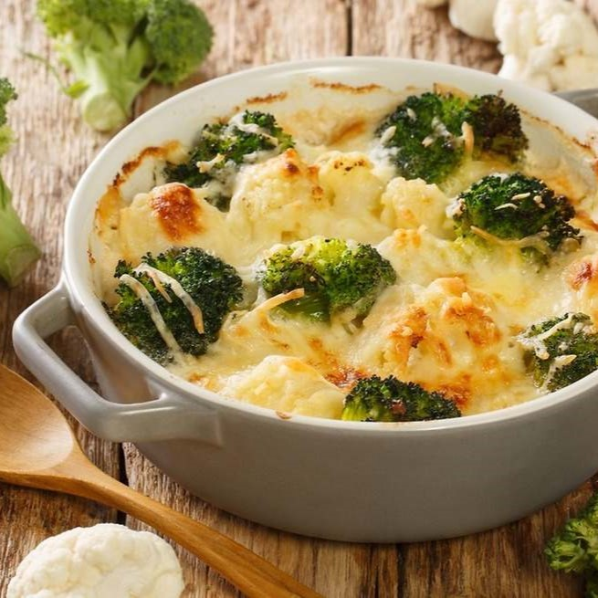

Comedor Diario
Palermo, Buenos Aires, Argentina
Comedor Diario, es un restaurante que celebra la simplicidad y la calidad de los ingredientes frescos y de temporada. Con un enfoque en la cocina saludable y sabrosa Narda Lepes, combina su experiencia y creatividad para ofrecer una experiencia gastronómica que es a la vez accesible y exquisita.
El menú cambia regularmente, reflejando la disponibilidad de los mejores productos locales. Los platos destacan por su frescura y variedad, abarcando desde ensaladas coloridas y nutritivas hasta platos principales que muestran la riqueza de la cocina argentina con un toque moderno y saludable.

Narda Lepes
Chef y Presentadora


